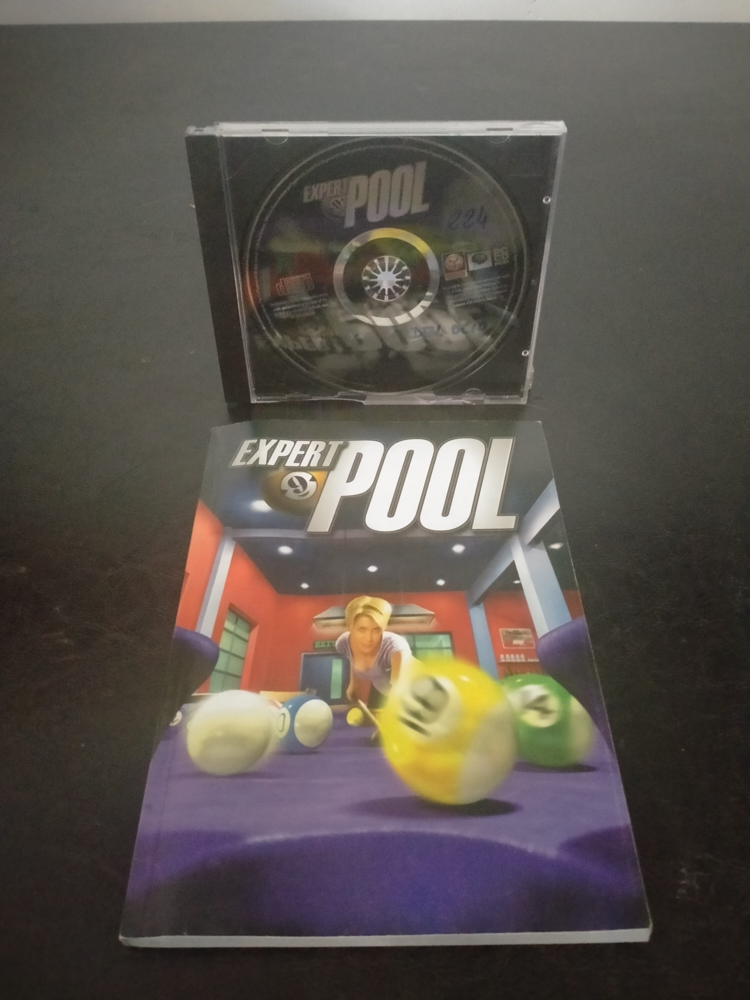

Ficha #000000
Expert Pool
Expert Pool es un simulador de billar para Windows publicado en 1999 por Psygnosis y desarrollado por Visual Sciences. Su propuesta busca reproducir con precisión el comportamiento de las bolas, los efectos aplicados con el taco y la geometría de las mesas mediante gráficos tridimensionales y un motor físico orientado a la simulación. Ofrece numerosas modalidades de billar y snooker, diferentes niveles de dificultad, rivales controlados por el ordenador y opciones multijugador local, por red local e Internet. Sus trece escenarios y la amplia selección de oponentes aportan variedad ambiental a una producción representativa del auge de los simuladores deportivos tridimensionales para PC de finales de los años noventa. Esta edición física en Jewel Case conserva el lanzamiento comercial en CD-ROM acompañado de su manual impreso.
- Formato
- Jewel Case
- Plataforma
- Win95 Win98
- Género
- Simulación deportiva Billar Deportes Simulación física
- Serie
- Todos Jewel Case
- Desarrollador
- Visual Sciences
- Distribuidor
- Psygnosis
- EAN
- —
Contenido de la edición
- Caja Jewel Case
- CD-ROM
- Manual de instrucciones
Preservación
- Protección
- No determinado
- Formato recomendado
- BIN/CUE
- Jugable en virtualización
- Sí
Se recomienda crear una imagen completa del CD-ROM original y conservar digitalizaciones del manual y de las carátulas. Al no haberse identificado de forma concluyente el sistema anticopia de esta edición, conviene realizar una lectura con información de subcanales y comprobar posteriormente la instalación y ejecución en un entorno Windows 95 o Windows 98 virtualizado.